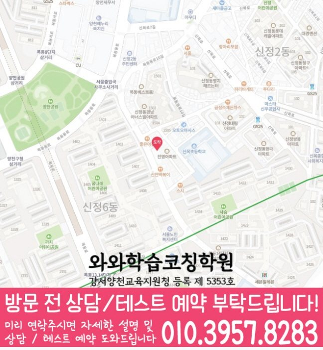

High school Korean · English · Math
목동 고등학생 국영수학원
목동 고등학생 국영수학원 선택 전 고등 내신 자료, 최근 오답과 과목별 가능 학년, 센터 위치·비용 확인 기준을 안내합니다.
01 Quick answer
목동에서 먼저 확인할 내용
목동에서 고등학생 국영수학원을 찾는다면 와와학습코칭센터 목동점의 과목별 가능 학년을 먼저 확인하세요. 제공된 고등학교 참고 자료와 학생의 실제 교재를 대조하고, 학생의 실제 풀이 기록에 맞게 국어·영어·수학의 막힌 원인을 나눈 뒤 실행 가능한 주간 계획을 정해야 합니다.
대표 학생 상황
세 과목의 과제 순서와 오답 복습 시점을 스스로 정리하기 어려운 고등학생


010-6839-8283상담 전 핵심 안내
목동에서 고등학생을 위한 영어·수학 학원을 찾고 있다면, 지역 센터에서 현재 실력 진단부터 개념 정리, 유형별 문제풀이, 오답 관리까지 이어지는 학습 로드맵을 제공합니다. 학생의 약점과 목표(내신/수능형)를 기준으로 학습 속도와 방향을 맞춰 학습 기록이 이어지도록 코칭합니다. 목동 고등학생 국영수학원을 찾는 학부모님께 먼저 드릴 답변은 간단합니다: 현재 성적보다 오답 패턴, 등하원 시간, 과제 지속성을 함께 봐야 합니다. 비슷한 학습 문제를 목동 상담에서 어떻게 나눌지 살펴봅니다.
현재 자료에서 먼저 확인할 학습 신호
목동 수업 내용을 점검할 때는 학습 시간 배분을 바탕으로 반복 오류를 점검합니다. 진도 점검과 최근 성적 흐름을 바탕으로 개념 부족, 풀이 습관, 취약 유형을 먼저 분류해 학습 순서를 설계합니다.
영어·수학 집중 관리. 목동 수업 내용을 점검할 때는 최근 풀이 기록을 바탕으로 복습 시점을 정합니다.
목동 고등학생의 국어·영어·수학 학습 점검에서 내신 대비는 시험 기간에만 갑자기 시작되는 과정이 아닙니다. 목동에서 보완할 부분이 있는 학생에게 시험 직전에는 새로운 교재를 추가하기보다 이미 틀린 문항의 조건과 풀이 과정을 다시 점검하는 시간이 필요합니다. 서울특별시 양천구 목동 고등학생이 국어·영어·수학을 함께 관리하려면 내신 대비는 새 문제를 많이 푸는 것보다 학교 수업 내용과 오답 기록을 다시 연결하는 과정이 중요합니다. 고등 국어·영어·수학 관리 기준에서는 수행평가가 겹치면 지필 대비 시간이 줄어들 수 있으므로 주간 계획에서 과목별 최소 학습량을 따로 잡아야 합니다.
이해와 실행을 함께 살피는 수업 기준
문제보다 원리를 먼저 가르칩니다. 왜 틀리는지의 근본 원인을 찾아 개념을 다시 연결하고, 같은 실수가 반복되지 않게 풀이 과정을 점검합니다.
학습 태도까지 코칭합니다. 목동 다음 학습 단계에서는 과제 이행 기록을 바탕으로 반복 오류를 점검합니다.
고등학생 자녀를 둔 가정에서 반복되는 질문은 “목동 고등학생 국영수학원에서 우리 아이가 세 과목을 모두 따라갈 수 있을까”라는 점입니다. 서울특별시 양천구 목동 기준으로는 국어, 영어, 수학을 한꺼번에 늘리는 계획보다는 최근 학습 기록과 실행 가능성을 먼저 봐야 합니다. 고등학생의 현재 단원과 재풀이 결과를 확인해 필요한 학습량을 조정해야 합니다. 상담 기록에 현재 범위, 반복해 틀린 문제와 완료 시간을 남겨 목동 학생에게 필요한 보완 순서를 찾습니다. 학습 변화를 시작하려면 목동 학생이 직접 수행할 한두 가지 행동을 주간표에 배치해야 합니다.
목동 고등학생 학교 자료와 과목별 계획 연결
상담 자료를 정리하면, 제공 자료에는 양천고·신목고·한광고·서울영상고가 고등학교 참고 정보로 정리되어 있습니다. 다음 계획을 정하기 전에, 학교 이름은 상담의 출발점으로만 사용하고 실제 시험·교과 자료를 함께 확인합니다.
학교 일정까지 함께 보면, 상담에서는 시험 범위표·학교 프린트·수행평가 일정 자료를 과목별로 나누어 현재 범위와 반복 오답을 확인합니다. 확인 순서를 세울 때, 목동 학생에게 필요한 것은 학교명 반복보다 자료에서 찾은 문제를 다음 계획으로 바꾸는 과정입니다.
진단에서 재확인까지의 학습 순서
1. 현재 수준 확인. 학년, 학교 진도, 모의/내신 성적 데이터를 기반으로 부족 단원과 자주 틀리는 유형을 우선 파악합니다.
2. 개념 정리와 유형 학습. 목동 고등학생 상담에서는 다음 점검 날짜를 학교 일정과 대조해 실행 가능한 분량을 정합니다.
3. 오답 관리와 학습 피드백. 오답을 단순 재풀이로 끝내지 않고, 오답 원인(개념/계산/독해/조건 누락 등)을 기록하고 다음 풀이 전략을 고정합니다.
다음 학습 단계로 이어지는 확인 기준
고1. 목동 학습 순서를 정할 때는 다시 풀기 결과를 바탕으로 설명할 수 있는 범위를 확인합니다. 학교 내신형 문제부터 유형을 쌓아, 중간·기말 대비에 바로 연결되도록 설계합니다.
고2. 목동 과목별 점검에서는 학습 시간 배분을 바탕으로 다음 보완 순서를 정합니다. 수학은 유형 반복 점검으로 계산 실수와 풀이 패턴을 교정합니다.
고3. 내신과 수능형 문제를 분리해 전략적으로 학습하며, 시간 관리 훈련을 함께 진행합니다. 목동 다음 학습 단계에서는 오답 원인을 바탕으로 상담에서 확인할 기준을 정리합니다.
시험 대비. 목동 학군 특성을 고려해 시험 범위와 제공된 시험지의 문항 유형에 맞춰 복습 계획을 조정합니다. 시험 전에는 실수 유형·취약 유형을 우선 정리하며 실전 완성도를 높입니다.
목동 지역 센터는 고등학생의 현재 상태를 기준으로 영어·수학 학습을 단계별로 정리하고, 코칭 상담을 통해 현재 수준에 맞춘 학습 방향을 자세히 정리합니다.
02 Consultation examples
목동 학부모 상담 상황 예시
아래 내용은 실제 고객 후기나 성적 결과가 아니라, 상담에서 확인할 질문을 이해하기 위한 상황 예시입니다.
목동에서 세 과목을 함께 알아보는 학부모의 상담 장면을 가정했습니다. 최근 풀이를 보며 국어 근거 찾기, 영어 해석, 수학 풀이 단계 중 우선 점검할 부분을 구분해 듣는 상황입니다.
목동에서 제공된 고등학교 참고 정보인 양천고·신목고·한광고 등의 목록과 학생의 실제 학교 자료를 대조해 질문하는 학부모 상황을 가정했습니다. 상담 내용을 들은 뒤 국어·영어·수학의 피드백 방식이 각각 무엇인지와 가정에서 확인할 기록을 구분합니다.
03 FAQ
목동 고등학생 국영수학원 자주 묻는 질문
학부모님이 상담 전에 자주 확인하는 내용을 질문과 답변으로 정리했습니다.
목동 고등학생 국영수학원이 필요한지 어떤 기록으로 판단하나요?
최근 시험 뒤 과목별 보완 순서를 정하기 어렵다면 시험지와 오답 기록을 함께 준비하세요. 목동 상담에서는 내신 일정과 실제 복습 시간을 대조해 우선순위를 확인할 수 있습니다.
목동 고등학생이 국어·영어·수학을 함께 관리할 때 무엇을 구분해야 하나요?
목동 상담에서는 한 과목의 과제가 다른 과목 복습을 밀어내지 않도록 최소 유지량과 집중 과목을 구분합니다. 국어·영어·수학의 오답 원인이 다르므로 재학습 방법과 확인 날짜도 과목별로 정해야 합니다.
목동 고등학생은 상담 때 어떤 학교 자료를 준비해야 하나요?
제공 목록에서 양천고·신목고·한광고·서울영상고 등을 확인할 수 있지만 모든 학교의 수업 가능 여부를 뜻하지는 않습니다. 실제 범위와 과제 자료를 준비해 상담에서 확인하는 편이 정확합니다.
목동 센터에 문의할 때 주소와 가능 학년을 함께 물어봐야 하나요?
목동에서 문의할 때는 실제 방문 위치를 위 센터 확인 정보에서 확인할 수 있습니다. 센터별 교습비 확인 버튼에서 제공 자료를 볼 수 있습니다. 개설 과목과 고등학생 가능 학년, 시간표와 보강 방식은 센터별로 다를 수 있으므로 등록 전에 함께 확인하세요.
04 Continue
목동 페이지 이동
카테고리 전체 지역 또는 앞뒤 지역 안내로 이동할 수 있습니다.